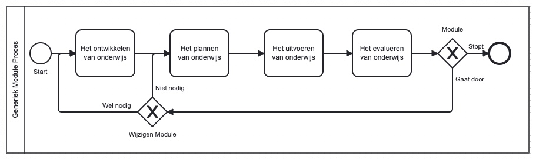
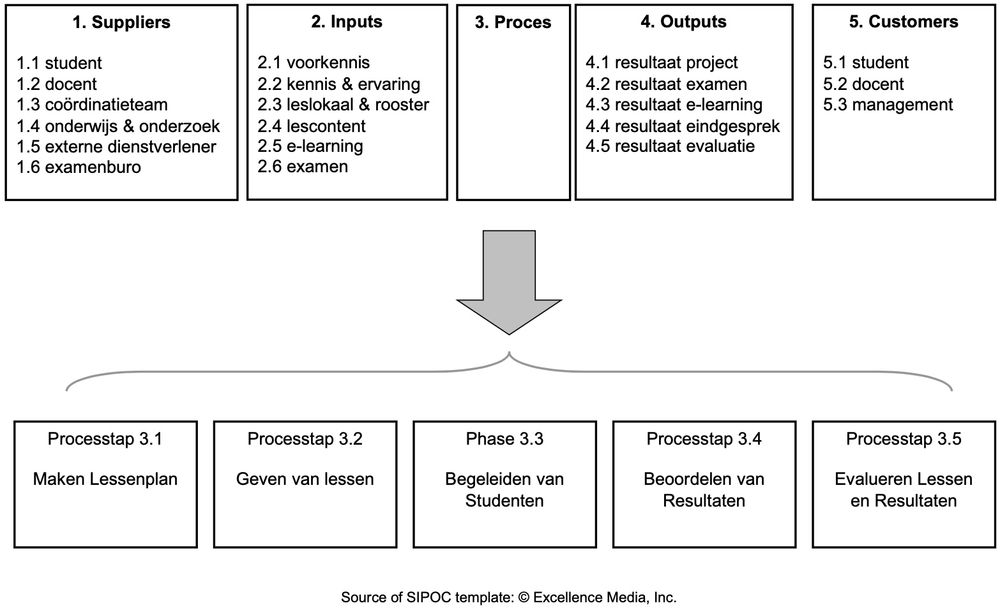

Definitie-fase
Sinds 2,5 jaar geef ik les op de Hogeschool van Amsterdam (HvA) op de Faculteit Business en Economie (FBE) binnen het cluster Finance & Control (F&C). In dit hoofdstuk, de “Define Fase”, ligt ik toe hoe ik gekomen ben tot het procesverbeter voorstel.
Proces-selectie
Mijn verzoek om de opdracht t.b.v. het Green Belt Certificaat te kunnen doen is goedgekeurd door de Finance & Control coördinator Nadine Steverink. Met de goedkeuring kwam de vraag om een onderwerp te kiezen dat te maken heeft met de opleiding. Ik had toen het idee om het project te doen over een onderdeel van de opleiding waarin ik zelf actief ben. Hierna heb ik mondeling overleg gehad met mijn collega’s Gert de Jong en Paul te Riele. De collega’s stonden niet afwijzend tegenover het idee. Ons regulier periodiek overleg geeft mij de gelegenheid om terugkoppeling te vragen op de deelproducten van het project.
Module Procesplaat

Onder onderwijslogistiek vallen onder andere de volgende activiteiten:
Onderwijsontwikkeling: Het ontwikkelen van leerplannen, curricula, lesmateriaal en toetsen.
Onderwijsplanning: Het plannen van het onderwijs, zoals het roosteren van docenten en studenten, het boeken van faciliteiten en het budgetteren.
Onderwijsuitvoering: Het uitvoeren van het onderwijs, zoals het geven van lessen, het begeleiden van studenten en het beoordelen van leerresultaten.
Onderwijsevaluatie: Het evalueren van het onderwijs, zoals het meten van leerresultaten, het verzamelen van feedback van studenten en docenten, en het identificeren van gebieden voor verbetering.
Het onderzoek situeert zich in de processtap Onderwijsuitvoering.

Vakken binnen de module
In de module “Processen & Risico” worden 6 vakken gegeven: 2 hoofdvakken en 4 ondersteunende vakken.
- operations
- governance risk compliance
- onderzoek
- statistiek
- ethiek
- proces
Onderstaand is een GANTT chart waarin de 10 weken van het blok weergegeven staan.
Beoordeling
Project Charter
Het project charter
| Business Case | Scope |
|---|---|
| Organisatie: Hogeschool van Amsterdam | |
| Faculteit: Business & Economie | |
| Opleiding: Finance & Control | |
| Module: Proces & Risico | |
| Vak: Operations Management | |
| Probleembeschrijving | Proces (start en einde) |
| Doelstelling | Team |
| Fase Tollgate datum Status | |
| Define 15-04-2024 Start | |
| Measure 30-04-2024 - | |
| Analyse 15-05-2024 - | |
| Improe 30-05-2024 - | |
| Control 15-06-2024 - |
tablename
SIPOC